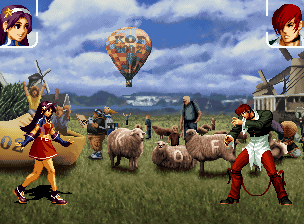
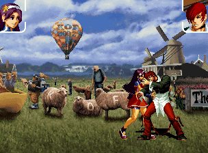
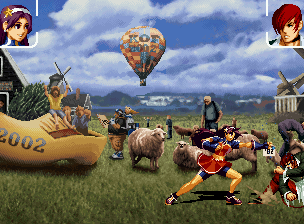
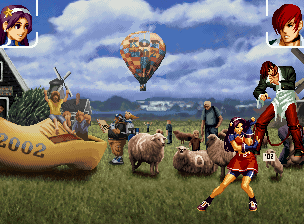

（完成度は55％→60％ほどです）
（このページの情報は、このサイトの掲示板でやきぷりんさんとのやりとりでできあがっていったものです）
擬似画面端現象とは？
KOFシリーズ、そして通常の2D対戦格闘ゲームでは画面を左右どちらかに一定以上スクロールさせると「端」があり、そこでスクロールは止まってしまいます（例外：RB1のギースステージやギャラクシーファイトの各ステージなど）。
逆にいえば、画面端、というかそのステージの端までいかないかぎりはスクロールは停止しないはずです。
しかし、KOFシリーズにおいては特定の手順を踏めばステージの端でなくてもスクロールを停止させることが可能です。この現象をここでは擬似画面端現象と呼ぶことにします。
擬似画面端現象－そのやり方
［通常の場合］
 |
KOFシリーズではプレイヤーキャラがお互いに後退を続けると両者とも表示されている画面の端にぴったりとついてしまいます。 |
  |
そして両者とも後退を止めて、片方のキャラ（便宜上Aとします）が前進し、もう片方のキャラ（便宜上Bとします）は停止していると、Aが前進するにつれてBとBの後ろの端との間に空間ができてくるはずです。 |
 |
そしてさらにAが前進を続けてBとBの後ろの端との空間が一定距離になると、その空間はそれ以上広がらず、同時にスクロール自体も停止します。 |
 |
その後、さらにAが前進を続けても、Bと接触するまで近づいても画面はスクロールしないはずです。 |
［擬似画面端現象の場合］
 |
まず、上と同様にAとBが後退を続けて両者表示画面上の端同士にして、両者移動を止めます。 |
 |
ここからAが前進行動をした場合、基本的にどんな前進方法でもBの後ろに空間はできるのですが、一部の技を使用して前進した場合に限っては画面がスクロールしません（可能な技は↓で列挙します）。 |
  |
そのスクロールしない技で画面中央まで移動すると、AがBを押すまではスクロールが停止されることになり、Bは後退する行動をとってもスクロールは停止されたままになります。これで擬似画面端現象の完成です。 |
  |
攻撃をガードさせてもスクロールしません（背景に注目して下さい）。 |
  |
攻撃をヒットさせてもスクロールしません（背景に注目して下さい）。 |
図：通常の場合
図：擬似画面端現象の場合
※キャラの大きさと空間の幅は、上のスクリーンショット（KOF2002）の比率に合わせています。
ただ、Bが完全に表示画面上の端とくっついていない場合にAがその特定の技を出してもスクロールは完全には止まらず、Bに攻撃を当てたりすると、ほんの少し画面がスクロールしてしまいます。しかしこの状態でも十分強力だと思います。
擬似画面端現象の利点について
端に追い詰めているのと同じ効果を得られるので、端限定の連係や連続技を決めることが可能ですし、普通の画面端とちがって追い詰めているキャラはめくり攻撃をすることも可能ですし、万一相手にD投げなどを食らっても端に追い詰められる危険もありません。
擬似画面端現象を起こせる技とその狙い方
| ゲーム | 可能なキャラ＆技とその使用法 |
| KOF’94 | （該当する技発見できず。） |
| KOF’95 | （調べてません。） |
| KOF’96 | アテナの弱テレポート |
| KOF’97 | アテナの弱テレポート ちづるの神速の祝詞（CorD） オロチの『画面全体に光を浴びせる』（超必殺技） |
| KOF’98 | アテナの弱テレポート ちづるの神速の祝詞（CorD） |
| KOF’99 | アテナの弱テレポート 紅丸の幻影ハリケーン（空振り時） ウイップのアサシン・ストライク（AorBorC） |
| KOF2000 | アテナの弱テレポート 紅丸の幻影ハリケーン（空振り時） ウイップのアサシン・ストライク（AorBorC） |
| KOF2001 | アテナの弱テレポート 紅丸の幻影ハリケーン（空振り時） ウイップのアサシン・ストライク（AorBorC） |
| KOF2002 | アテナの弱テレポート 紅丸の幻影ハリケーン（空振り時） ウイップのアサシン・ストライク（AorBorC） |
| KOF2003 | （調べてません。） |
特に使える技
KOF2002のアテナの弱テレポート
KOF2002のアテナの弱テレポートでの擬似画面端現象はさまざまな状況から狙え、なおかつアテナの端での固め能力や端限定の連続技の存在により、擬似画面端は強力な戦法となりえます。 では、KOF2002のアテナを使用して実際に擬似画面端現象を起こす方法を列記します。| 方法 | 備考 |
| C投げ＞後退＞（弱サイコボール）＞弱テレポート | サイコボールをガードさせれば確実に擬似端状態にできますが、サイコボールに前転されると擬似端現象を起こせなくなるので、弱サイコボールは省いた方がいいかもしれません。 |
| D投げ＞弱テレポート | 確実に擬似画面端にできるので強力です。 |
| 空中投げ＞飛び退き＞弱テレポート | この方法も安定して擬似画面端にできます（やきぷりんさん情報） |
| SCB（ヒット時即強制停止）＞弱テレポート | |
| 普段の立ち回りで、離れて弱サイコボールをガードされて＞弱テレポート |
・強攻撃≫→B≫SCBorファングアロー
その他
擬似画面端ではありませんが、端への運搬能力の高い技を書いておきます。
K’：MAXチェーンドライブジョー：強攻撃≫↘B≫爆裂拳≫弱フィニッシュ≫SCBHTK
山崎：ドリル（端に追い詰められた状態からヒットさせても逆に相手を画面端にできます）。